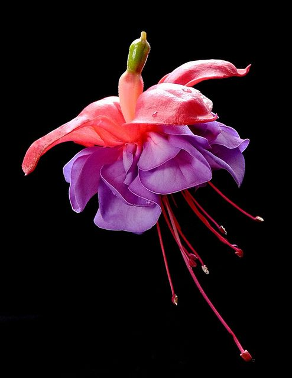
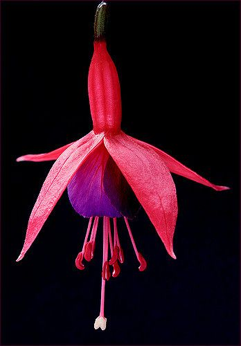

Fuchsia Magellanica is a stunning flowering plant known for its unique, drooping blossoms that come in vibrant shades of pink, purple, red, and sometimes white. Often seen in hanging baskets or shaded garden beds, it adds a touch of elegance with its delicate, lantern-like flowers. This plant is especially loved for its ability to attract hummingbirds and butterflies, making it a favorite in wildlife-friendly gardens. Thriving in cooler, moist environments, fuchsia brings a pop of color and charm wherever it grows.

